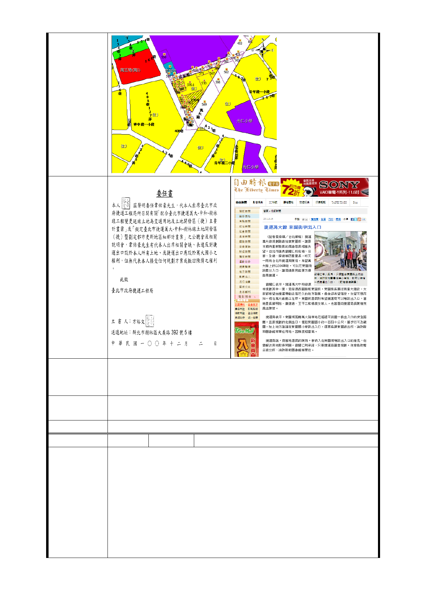

四、綜上，請貴局將陳情人之請求轉請臺北市政府捷運工程
建 議 辦 法 局將本計畫案之捷運出口自陳情人土地改至萬大國小，或另
為合宜之規劃，請鑒察。
市府回應
意見
同編號捷七－1 回應意見。
委員會決議 同編號交一－1 委員會決議。
編 號 捷七-3 陳情人 蕭○純等 3 人
主旨：有關貴局於本人所有坐落台北市萬華區萬大段二小段
地號數筆（見附件一）土地上設置捷運出入口事宜
說明：
一、經查，本人從未自貴局收受參與設置出入口位置之公聽
陳 情 理 由 會通知，且本人上開土地之鄰地約 100 米處為萬大國小，為
國有地，為何貴局未於國有地上設置出入口，而於本人土地
上設置，顯見貴局處理此事並未遵守行政程序法，給予本人
（權利受侵奪之人）陳述意見之機會。又劃定國有地作為捷
運出入口，行政程序較為簡便，貴局得以行文台北市政府促
- 125 -